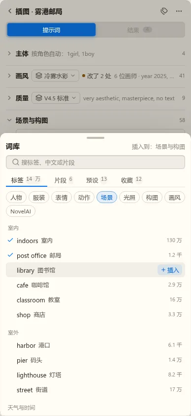
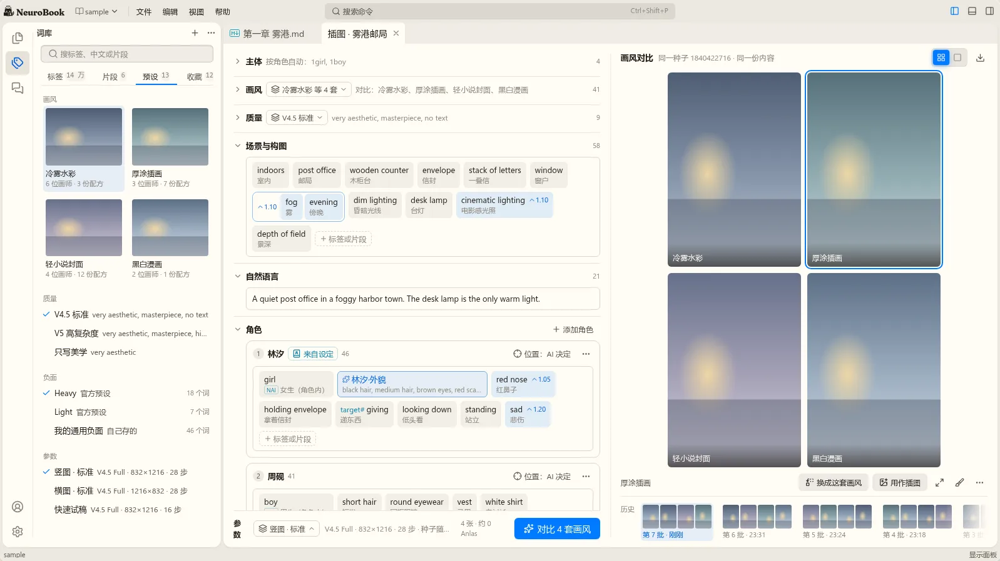
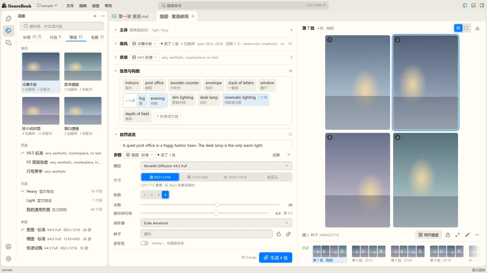
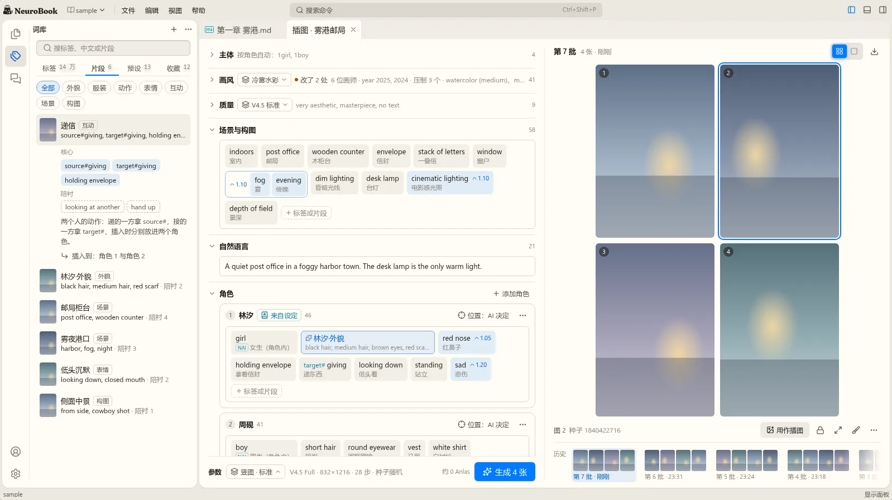
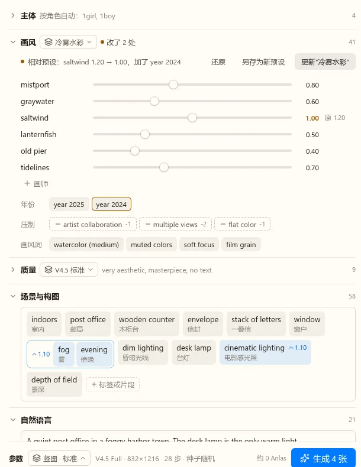
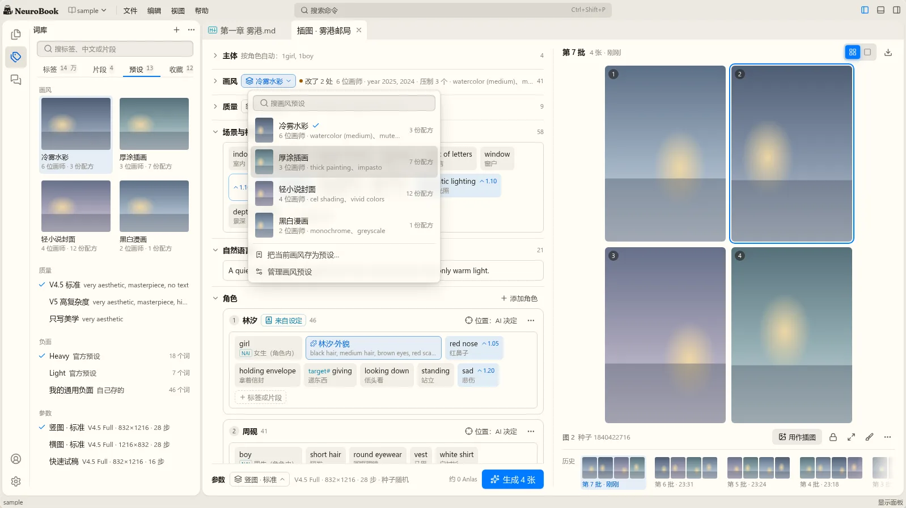
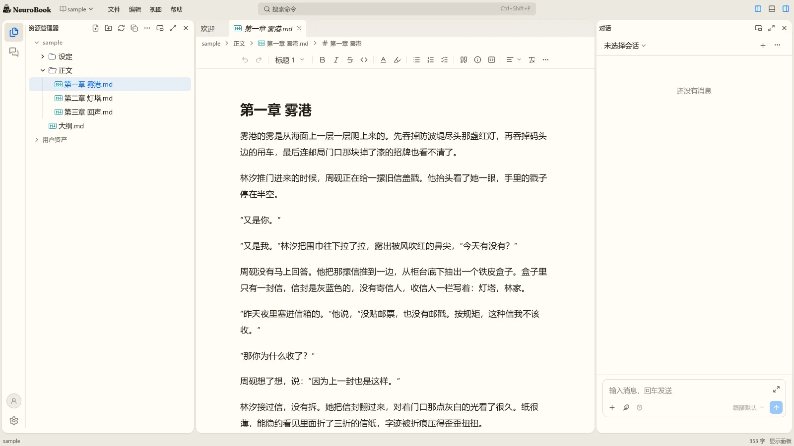

提示词工作台：静态稿评审板
w00042 t07。用样例作品《雾港》第一章配一张插图：林汐去邮局取那封没有邮戳的信，周砚坐在柜台后。主提示词、两个角色、负面提示词与参数都按 NovelAI V4.5 的写法搭。
外框是真实组件：标题栏、活动栏、面板头、编辑器标签条、状态栏，以及按钮、分段开关、标签页、输入框这些 nb-ui 控件。工作台本身（提示词区、结果区、词库）是一次性的草稿，不是产品代码。结果图是占位图，静态稿不调用生成接口。标签的中文与使用次数是演示用的取值。画布 1600×900，亮色。
这一轮画了什么 说明
按第 1、2 轮的决定（标签块、词库在侧栏、按节、预设是引用加差异）往下画四处。参数与片段页是照决定画的，不单独问；窄屏和画风对比各有一道题。
问题 5：窄屏（390 宽）怎么放提示词和结果 待定



问题 6：“只换画风”的对比抽卡，第一版做不做 待定

第一版就做（推荐）
分节和预设定了以后，它只是“同一份配方、换画风这一节、固定种子”跑几次，额外的东西只有结果区的对比视图。
以后再说
第一版只有普通的抽卡；想比较画风就手动换预设、固定种子，再生成一次。
参数展开 说明

片段页 说明

还没想清楚的一处：人物外貌（图里的“林汐·外貌”）是片段，还是角色设定的一部分？角色接上设定（t11）以后，外貌应当从设定来，片段里只留不属于某个角色的东西。这一条留给 t11 再定。
这一轮改了什么 说明
开发者 11-10 指出第 1 轮漏了预设系统。同一天的调研（社区提示词的结构）发现：社区的提示词天然分成几节（主体、画风、质量、场景、角色、负面），有一半的 V5 提示词用空行分节，还有人自己写 <style> 标记；画风串是最主要的复用单位；负面提示词是各自改着用的个人预设。所以这一轮把提示词区改成按节组织，预设挂在节上：
- 节：主体、画风、质量、场景与构图、自然语言、角色、负面，生成时按这个顺序拼成一串（这是社区最常见的顺序，节可以拖动换序）。主体默认按角色自动填。
- 预设挂在节上：画风、质量、负面、参数四种节可以套用预设，标题上是预设名；场景、自然语言自由书写；角色可以“来自设定”（t11 角色视觉档案）。
- 套了预设的节默认收起成一行，自由书写的节默认展开：一屏先看到这张图要画什么，画风与质量退到一行摘要。
- 画风是一类单独的预设：画师一行一位、拖权重；年份、压制（负权重）、其它画风词是小块；带一张样图，记着被几份配方用到。
- 侧栏的词库多一页“预设”，按类列出；画风预设带样图。
- 历史记的是拼好的整串：以后改了预设，旧的批次照样能按当时的提示词重现。
问题 3：提示词区按节组织，还是一整段 已定
11-10 定：A 按节。

B 一整段（第 1 轮的样子）

主提示词是一整段，画风靠片段引用；预设只能整段替换或插入。
问题 4：套用预设以后，预设和配方是什么关系 已定
11-10 定：A 引用，配方里的改动显示成差异（会话里说“按推荐来”，主会话代录）。
A 引用，配方里的改动显示成差异（推荐）


配方记“用了哪个预设，在它上面改了什么”。标题上写“改了 2 处”，展开后列出改动（saltwind 1.20 → 1.00，加了 year 2024），可以还原、另存为新预设，或者把改动写回预设。预设更新以后，没有改过那几项的配方跟着变。
B 复制，套用以后各自独立
套用时把预设的内容复制进配方，之后和预设无关；标题上只记“来自 冷雾水彩”。简单，但调好一套画风以后，用到它的其它配方不会跟着变。社区现在就是这样：同一份负面提示词抄出上千种变体。

问题 1：提示词里的标签怎么显示 已定
11-10 定：B 标签块，每个提示词框可以切回原文。
三张图的其它部分都一样，只换提示词区的画法。点图看整页。
A 原文着色

照写 NovelAI 原文，按语法上色：括号是强调色，加了权重的词带底色，没收录的词画波浪线，片段是小块。中文靠悬停看。最紧凑，一屏放得下主提示词和两个角色，最接近 NovelAI 自己的输入框。
B 标签块（推荐）
一个标签一块，下面一行中文；权重写成倍率（↑1.10、↓0.91），同一层括号里的几个词合成一个组框；片段块下面露出内容开头；NovelAI 专用的词标 NAI；没收录的标“未收录”；自然语言的句子单独一行。右上角的“块 | 原文”可以切回 A。
C 上原文、下对照

上面是不着色的原文框，下面一行行列出“标签 中文 倍率”的对照。nai-atelier 的做法：在原文里打字，对照区看意思、点选调权重。同一段内容出现两遍，高度最大。
{{ }} 与 1.1:: 是同一个意思，B 都显示 1.10，原文的写法不改）。代价是高度：同样 1600×900，B 只放得下主提示词和第一个角色，A 放得下全部。所以 B 的每个提示词框都能切回原文，懂语法的人在原文里改得最快。C 把同一份内容画两遍，又比 B 高，不推荐。PromptEditor 的规则相同）。所以 B 里改权重只换倍率、不改写法，粘贴进来的原文也不会被“整理”。问题 2：词库放在哪 已定
11-10 定：A 外壳的侧栏。
A 外壳的侧栏（推荐）
活动栏多一个“词库”，和资源管理器换着用。宽度、显示隐藏、移到右边都用外壳现成的做法。

已定：注意力排序 已定
2026-11-09 在会话里定的，这一轮的版式照它搭：
| 块 | 放在哪、默认怎样 |
|---|---|
| 提示词 | 工作台左半边：主提示词、各角色、负面提示词。和结果各占一半 |
| 结果 | 右半边，默认显示最近一批的大图；选中一张，下面一行是它的种子与动作（用作插图、固定种子、放大、局部重绘） |
| 词库 | 常驻的窄栏；打字时的标签联想在提示词框里弹出，不依赖它 |
| 参数 | 只露一行摘要（模型、尺寸、步数、种子），和“生成”按钮一起固定在左半边底部，点开才展开 |
| 负面提示词 | 收成一行：用了哪个预设、另加了哪几个词 |
| 历史 | 结果区底部一条缩略图带，按批排；点一批把当时的配方恢复到左边 |
| 整块收起 | 窄屏时词库变成抽屉；看大图时进灯箱 |
同时定的前提：工作台是编辑区里的一个标签页，一个标签页一份配方；Agent 不嵌进工作台，经工具读写；静态稿按 NovelAI 的形态画。
搭稿时发现的事 说明
这些不用这一轮回答，记进 t03（合同）、t05（词库）的待办：
- Token 计数要按模型的分词器算。标题旁的“112 / 512”是 V4.5 的上限；V4.5 用 T5 分词，V5 的上限不同。前端要能算，或者由后端算好送过来。
- 片段在原文里怎么写还没定。稿里暂写成
<画风·冷雾水彩>；NovelAI 自己在嵌套时写!macro:名字!，发请求前要展开成内容。 - 角色提示词只有 NovelAI 有。SD 或 ComfyUI 的路线没有这一块，要么隐藏，要么映射到分区提示词的插件。首发后端等 t02 定了再看。
- 角色里的
girl、boy与source#、target#是 NovelAI 的写法。词库要把它们和年份、美学这些专用词一起收进基础层（t01 的决定），否则会被标成“未收录”。 - 结果区在 900 高时，2×2 的大图只用了右半边一半多的宽度。竖图本来就这样；横图或一张时可以切“单张”。
现状与参照 说明

- NovelAI 官方界面（离线文档）：左边提示词与参数、右边结果；角色提示词一框一个，可排序、可定位置；Prompt Chunks 在框里是小块，可拖入，可用
@调出。 - nai-atelier（MIT，开发者 11-09 推荐）：候选 C 的“原文加对照”与候选 B 的组框（“连续权重胶囊”）都来自它；它的节奏是“生成一张、观察、微调、再生成”，每次生成前显示费用，稿里“约 0 Anlas”照这个放。它的片段库按固定用途分 16 类、和文件夹分开，留给 t05 参考。
- 法典图鉴（t01 调研）：中转源占位、用过的条目自动存成素材、搜索条件做成小块、快照式收藏。